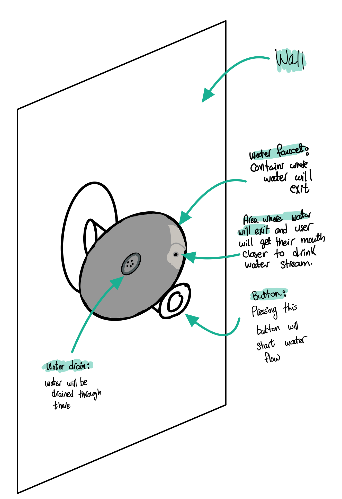
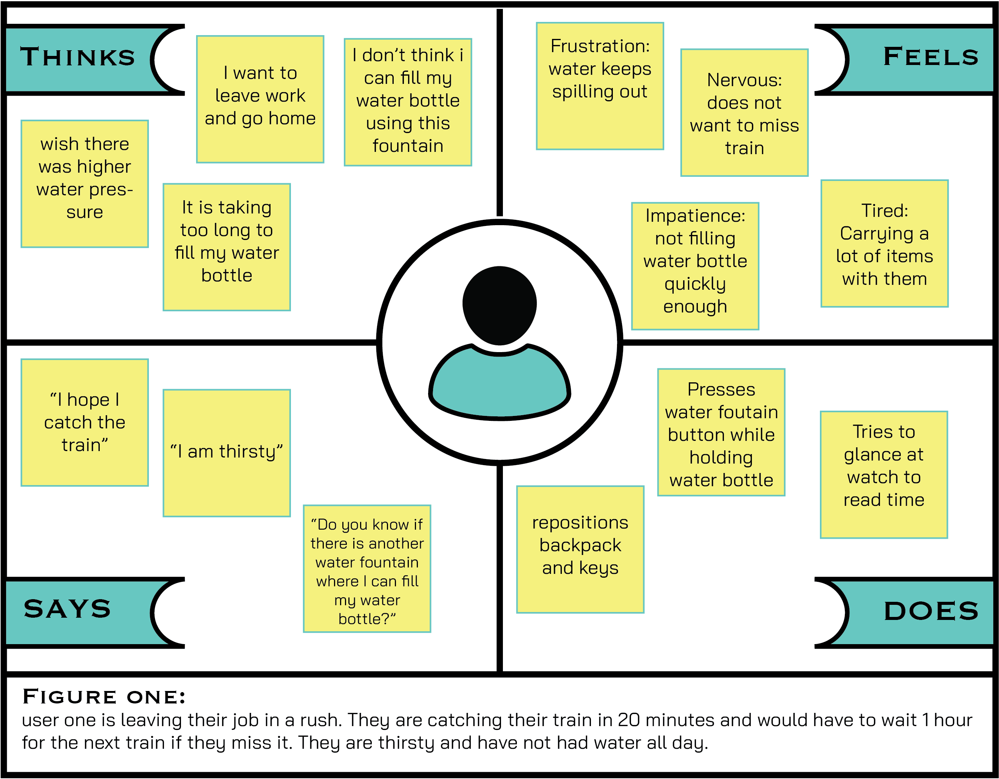
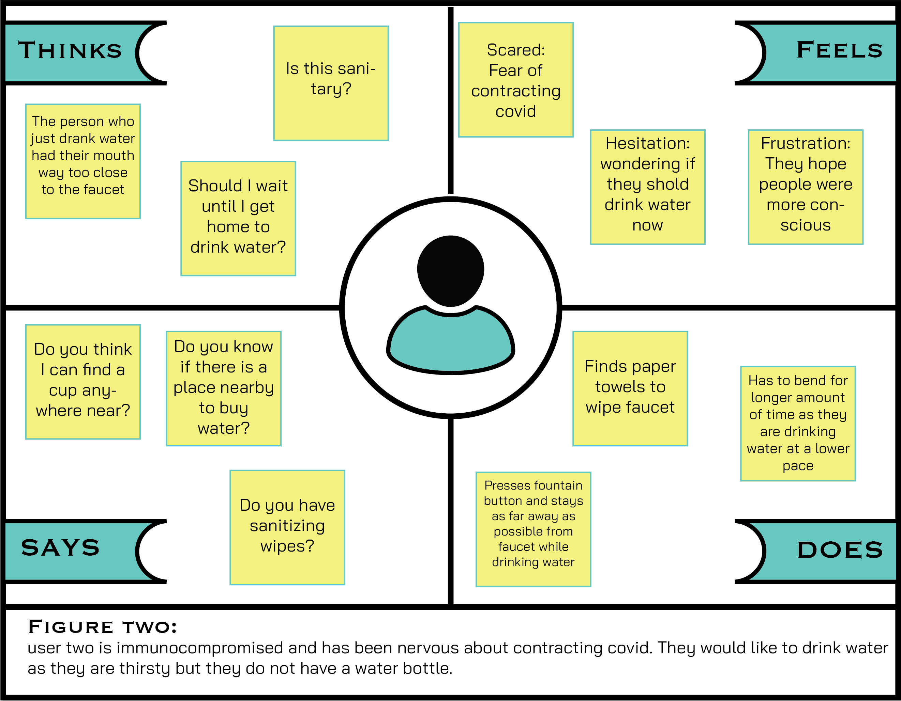

Part 1: Preparation
For this project, I was asked to select a public interface and assess the ease at which a user would interact with it. I decided to use a water fountain that is widely available on campus.
In order to use this interface, the user has to press the button situated below the fountain itself. Upon pressing the button, there will be a stream of water exiting through the water faucet in the corner. The user would tilt closer to the water stream in order to drink, and the excess water would go down to the concave fountain structure and into the drain.
Part 2: Observations
In order to gain a better perspective and understanding of how the interface presents itself, I interviewed three users and recorded their interactions with the water fountain. One user was in a rush, they juggled quite a lot of materials in order to press the button. They struggled to drink enough water as they were quite tall and had to stay in an uncomfortable position. They seemed dissatisfied with the process. This user also felt familiar with the product and knew to press the button to get the water to flow. Their attitude towards the water fountain indicated familiarity instead of product clarity. Another user expressed an expectation for a sensor and had hoped they would have found one instead of the button. They also were shorter in height and struggled with reaching the fountain, as opposed to the first user. Lastly, their immediate approach was to fill their water bottle using this water fountain. They would tilt the bottle uncomfortably until water started pouring out. The last user was uncomfortable by how close they had to be to the faucet in order to drink water. They tried their best to stay as far away as possible from the faucet. I realized later that they found drinking from the faucet to be unsafe considering Covid Measures and the rising need for caution. They have seen users in the past get very close to the water faucet.
Questions Asked
• Describe how the product presents itself to be used. • Do your expectations of how to use this product match how it is delivered? • Are there any unexpected observations that you did not predict? • What elements of the experience would you have improved or edited?
Recorded Answers
• The model of this water fountain makes it difficult to accommodate different physical heights • Not all users are comfortable with drinking directly from faucets and explored different alternatives to using the fountain. • All users expressed a desire in having higher water pressure • All users expressed a desire for having colder water offered • Most users felt like the product matched their expectations, however, they had hoped it would exceed them.
Personas
Based on my interviews with the three users, I created two user personas' empathy maps to better contextualize the user experience and better understand user needs. You can find the personas below.
